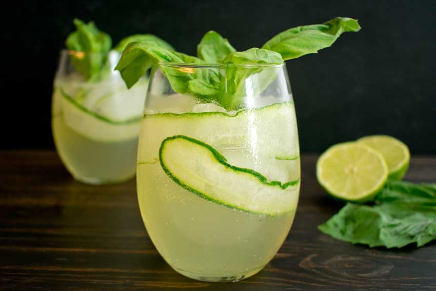

- Agregar lonja de pepino y hielo a la copa.
- Gin de tu preferencia: entre 1 1/2 y 2 oz.
-
Tonica: Rellenar. Si sirves en copa no llenar hasta el tope, importante
dejar un espacio dentro de la copa para apreciar los aromas.
- Garnish: Pepino, pimienta guayaba y albahaca.